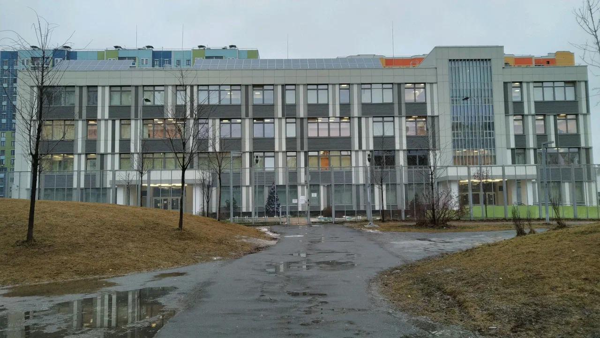

ГБОУ Школа № 2098 имени Героя Советского Союза Л.М. Доватора с 2019 года является участником проекта «IT-класс в московской школе».
Проект «ИТ-класс в московской школе» реализуется совместно с организациями высшего образования – лидерами в подготовке ИТ-специалистов, а также ведущими ИТ-компаниями – будущими работодателями обучающихся. Обучение в ИТ-классах направлено на предпрофессиональную подготовку школьников в сфере информационных технологий.